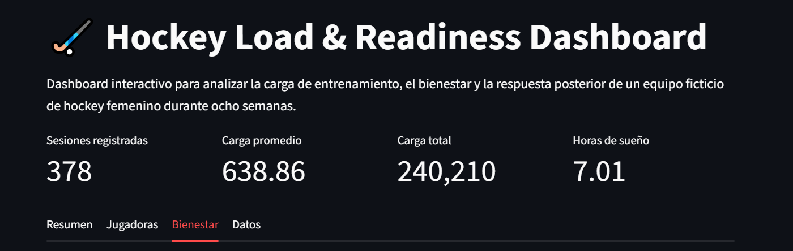

01 — SPORTS ANALYTICS
Hockey Load & Readiness
Análisis de la carga y el bienestar de un equipo ficticio de hockey femenino durante ocho semanas.
Problema
Comprender cómo varía la carga y el estado de las jugadoras después de cada sesión.
Proceso
Generación, limpieza, validación, análisis exploratorio, SQL y visualización.
Resultado
Dashboard interactivo con filtros, indicadores y análisis por jugadora.
378
registros
15
jugadoras
8
semanas
Python · Pandas · SQL · Plotly · Streamlit